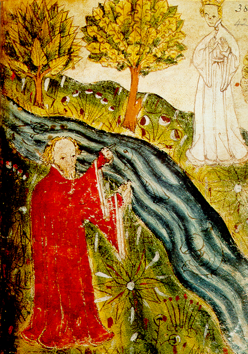
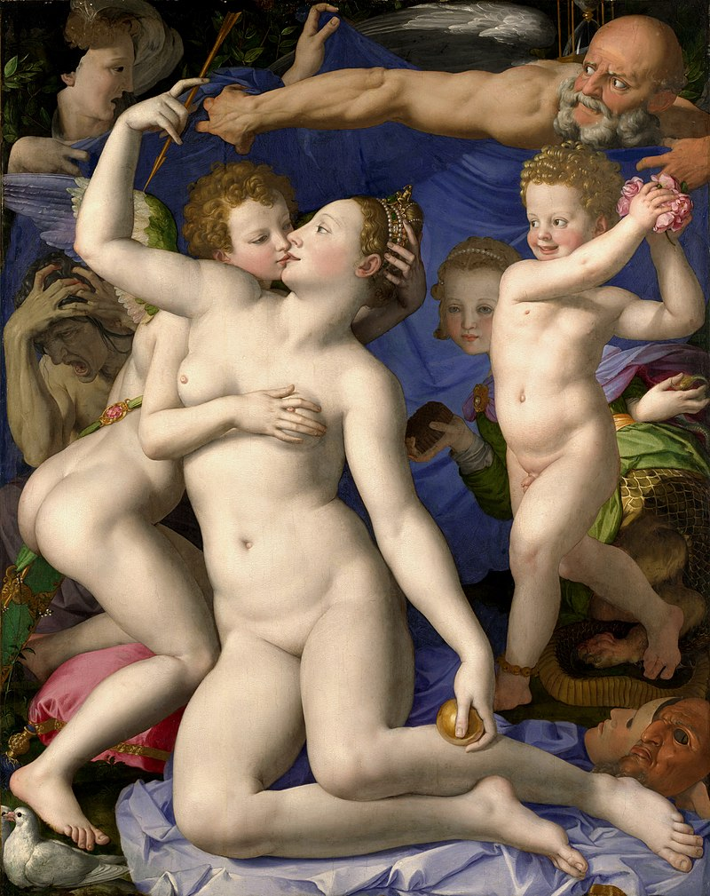
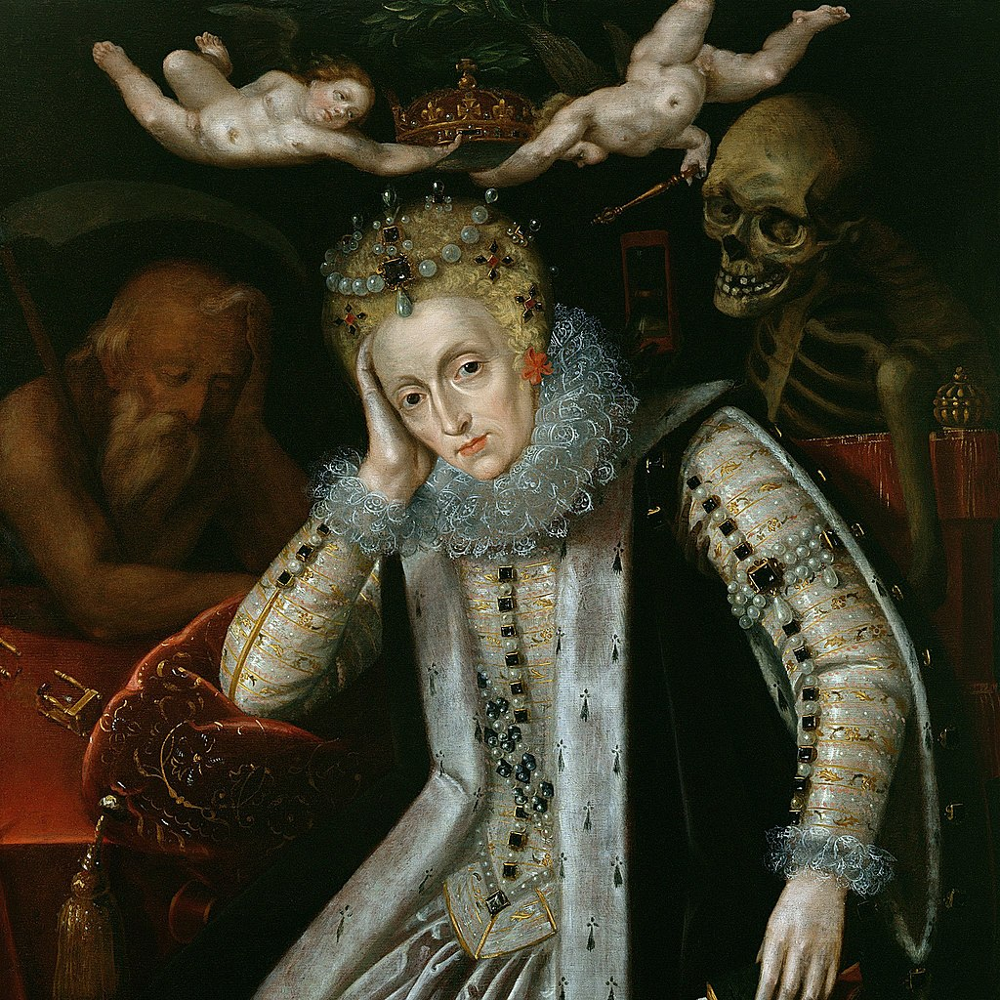
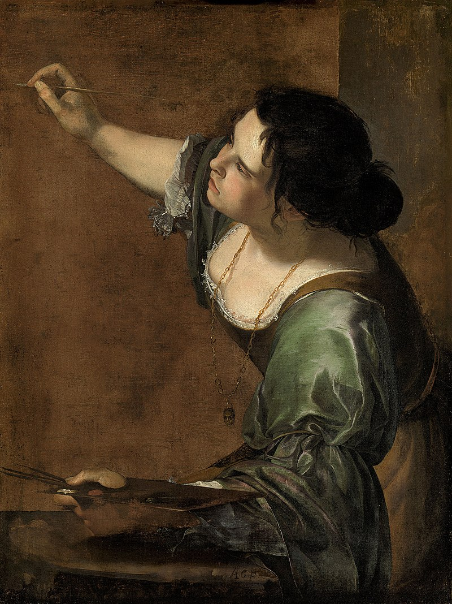
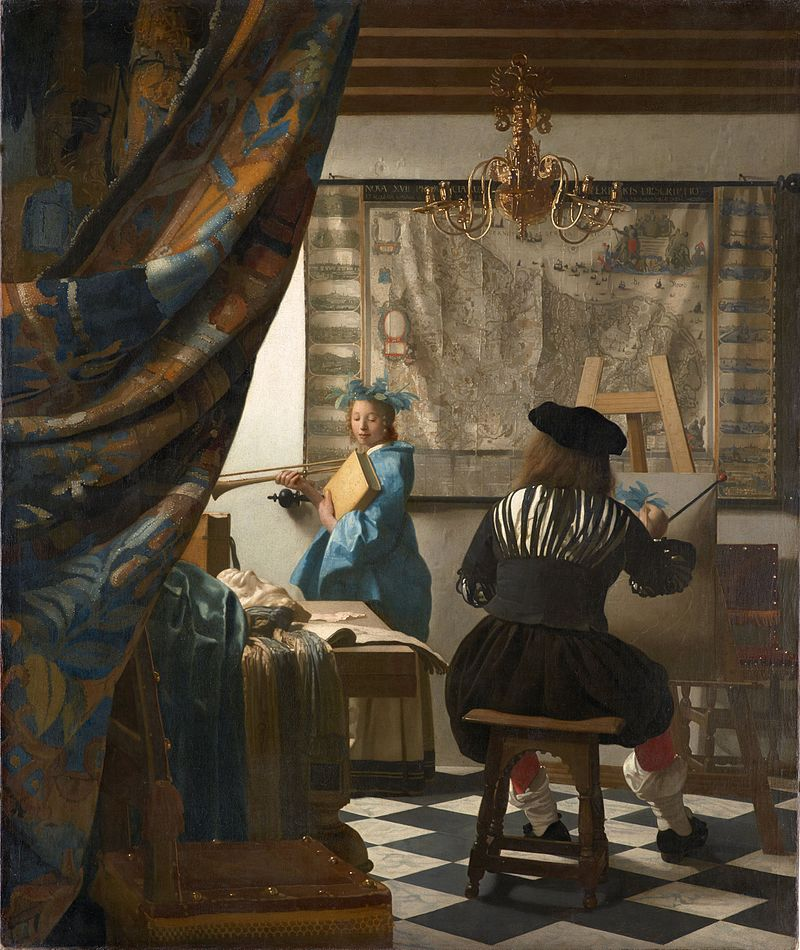

Allegory


Bronzino, Venus, Cupid, Folly and Time (c. 1545): The deities of love are surrounded by personifications of (probably) Time (a bald, man with angry eyes), Folly (the young woman-demon on the right, possibly also so old woman on the left), and others.

Titian, Allegory of Prudence (c. 1565–1570): The three human heads symbolise past, present and future, the characterisation of which is furthered by the triple-headed beast (wolf, lion, dog), girded by the body of a big snake

The English School's Allegory of Queen Elizabeth (c. 1610), with Father Time at her right and Death looking over her left shoulder. Two cherubs are removing the weighty crown from her tired head.

Artemisia Gentileschi, Self-Portrait as the Allegory of Painting (c. 1638–39)
